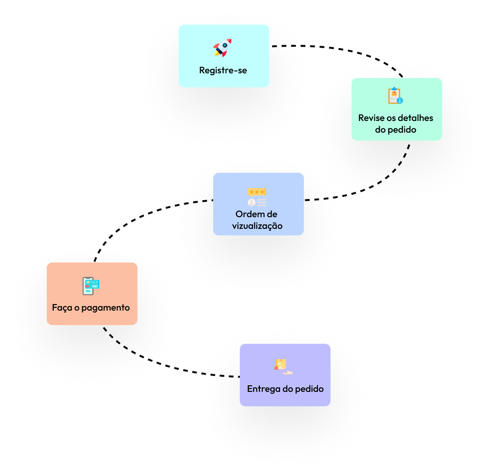

Nosso processo simples de pedido
A satisfação do cliente é a nossa prioridade, e garantimos a entrega o que prometemos. Vamos alinhar nossas ideias e estratégias inovadoras às suas necessidades para gerar resultados únicos e poderosos.
Atendemos aos requisitos de conteúdo desafiadores do seu negócio, seja
você uma startup ou uma empresa. Se você deseja deixar uma marca na
web por meio de conteúdo de marketing inovador, podemos atendê-lo
melhor.
Mas quem tem tempo para administrar seus negócios e martelar o teclado
para obter o conteúdo dentro do prazo e do alvo?
